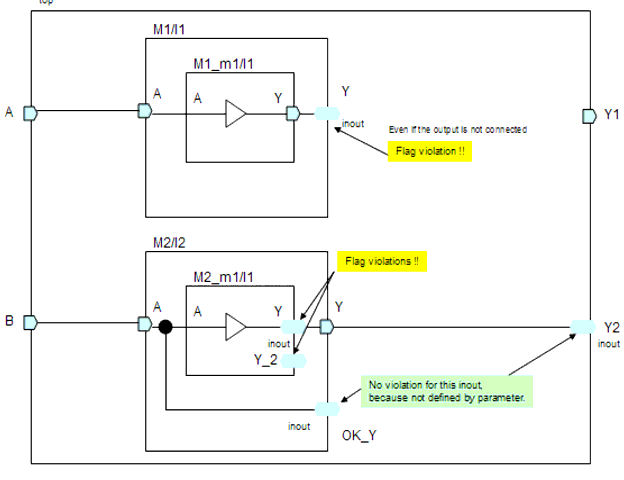

Description
This rule fires when inout port is used (the connection of inout does not matter) in user-defined instance or module (defined by parameters). This helps designer to control inout port connection in some specific modules. For example, the inout ports should not be used in layout hierarchy which is same as user defined module/instance by parameters.
Argument: %s1 is the hierarchy name of an illegal inout port.You can use the rule_set_parameter Tcl command to configure the below parameters:CON28_APPLY_MODULE - You can configure this parameter to allow LEDA to only apply this rule check on specific instances that are instantiated by the modules specified in this parameter.CON28_APPLY_INSTANCE - You can configure this parameter to allow LEDA to only apply this rule check on specific instances that are specified in this parameter.
Policy
DESIGN
Ruleset
CONNECTIVITY
Language
VHDL/Verilog
Type
Hardware
Severity
Error
`timescale 1ns/1ps module top(Y1,Y2,A,B); output Y1; inout Y2; // PASS input A,B; M1 I1(.Y(Y1), .A(A)); M2 I2(.Y(Y2), .A(B), .OK_Y() ); endmodule module M1(Y,A); inout Y; // FLAG input A; M1_m1 I1(.Y(Y), .A(A)); endmodule module M1_m1(Y,A); output Y; input A; TB2BUFXL I1(.Y(Y), .A(A)); endmodule module M2(Y,A,OK_Y); output Y; inout OK_Y; // PASS input A; M2_m1 I1(.Y(Y), .A(A), .Y_2() ); assign OK_Y = A; endmodule module M2_m1(Y,A,Y_2); inout Y; // FLAG input A; inout Y_2; // FLAG TB2BUFXL G1(.Y(Y), .A(A) ); endmoduleConfiguration
rule_deselect -all
rule_select -policy DESIGN -rule NTL_CON28
rule_set_parameter -rule NTL_CON28 -parameter CON28_APPLY_MODULE
-value { M1 M2_m1 }
Violations
13: inout Y; // FLAG
^
con28_case1.v:13: CONNEC> [ERROR] NTL_CON28: Should not use inout ports
in user defined modules/instances top.I1.Y
37: inout Y; // FLAG
^
con28_case1.v:37: CONNEC> [ERROR] NTL_CON28: Should not use inout ports
in user defined modules/instances top.I2.I1.Y
39: inout Y_2; // FLAG
^
con28_case1.v:39: CONNEC> [ERROR] NTL_CON28: Should not use inout ports
in user defined modules/instances top.I2.I1.Y_2
